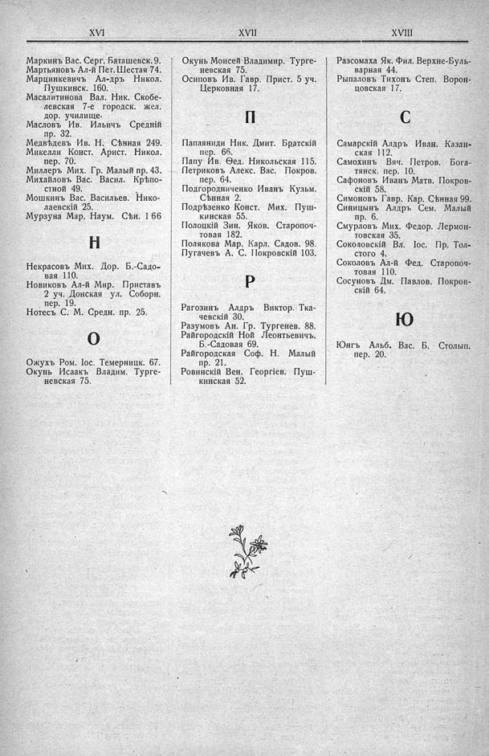

Лист источника 350
Скан

Распознанный текст
XVI
Маркинъ Вас. Серг. Баташевск. 9.
Мартьяновъ Ал-й Пет. Шестая 74.
Марцинкевичъ Ал-дръ Никол.
Пушкинск. 160.
Масалитинова Вал. Ник. Скобе-
левская 7-е городск. жел.
дор. училище.
Масловъ Ив. Ильичъ Средній
пр. 32.
Медвѣдевъ Ив. Н. Сѣнная 249.
Микелли Конст. Арист. Никол.
пер. 70.
Миллеръ Мих. Гр. Малый пр. 43.
Михайловъ Вас. Васил. Крѣпо-
стной 49.
Мошкинъ Вас. Васильев. Нико-
лаевскій 25.
Мурзуна Мар. Наум. Сѣн. 166
Н
Некрасовъ Мих. Дор. Б.-Садо-
вая 110.
Новиковъ Ал-й Мир. Приставъ
2 уч. Донская ул. Соборн.
пер. 19.
Нотесъ С. М. Средн. пр. 25.
О
Ожухъ Ром. Іос. Темерницк. 67.
Окунь Исаакъ Владим. Турге-
невская 75.
XVII
Окунь Моисей Владимир. Турге-
невская 75.
Осиповъ Ив. Гавр. Прист. 5 уч.
Церковная 17.
П
Папаяниди Ник. Дмит. Братскій
пер. 66.
Папу Ив. Ѳед. Никольская 115.
Петриковъ Алекс. Вас. Покров.
пер. 64.
Подгородниченко Иванъ Кузьм.
Сѣнная 2.
Подрѣзенко Конст. Мих. Пуш-
кинская 55.
Полоцкій Зин. Яков. Старопоч-
товая 182.
Полякова Мар. Карл. Садов. 98.
Пугачевъ А. С. Покровскій 103.
Р
Рагозинъ Алдръ Виктор. Тка-
чевскій 30.
Разумовъ Ан. Гр. Тургенев. 88.
Райгородскій Ной Леонтьевичъ.
Б.-Садовая 69.
Райгородская Соф. Н. Малый
пр. 21.
Ровинскій Вен. Георгіев. Пуш-
кинская 52.
XVIII
Разсомаха Як. Фил. Верхне-Буль-
варная 44.
Рыпаловъ Тихонъ Степ. Ворон-
цовская 17.
С
Самарскій Алдръ Иван. Казан-
ская 112.
Самохинъ Вяч. Петров. Бога-
тянск. пер. 10.
Сафоновъ Иванъ Матв. Покров-
скій 58.
Симоновъ Гавр. Кар. Сѣнная 99.
Синицынъ Алдръ Сем. Малый
пр. 6.
Смурловъ Мих. Федор. Лермон-
товская 35.
Соколовскій Вл. Іос. Пр. Тол-
стого 4.
Соколовъ Ал-й Фед. Старопоч-
товая 110.
Сосуновъ Дм. Павлов. Покров-
скій 64.
Ю
Юнгъ Альб. Вас. Б. Столып.
пер. 20.